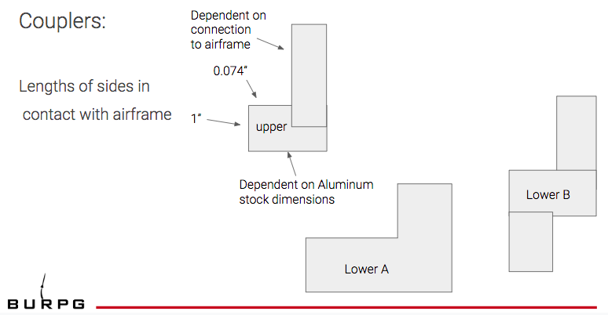

SUMMARY I applied engineering principles to the design of a rocket with the aim of reaching an altitude of 10,000ft per IREC guidelines. My role was to lead the Airframe team, and support Flight Dynamics. MODEL ROCKET LAYOUT GOALS The primary functions that the air frame serves in the rocket are to provide some structure to contain the internal components, the recovery system during flight, motor, and motor mount and to connect them to the other external features of the rocket, nose cone and fins. The objectives and constraints on the left are associated with the rocket as a whole, and on the right are more specific for the body tube. Objectives were distilled from the IREC manual: IREC 2020 Rules and Requirements Document MATERIAL SELECTION I selected Blue Tube due to its high compressive strength to density ratio, cost and machinability compared to other materials typically used in model rocketry (specifically carbon fiber, aluminum, fiberglass and aluminum 6061T6). Below is a slide from the project PDR. The airframe was initially considered a single tube of material encasing all of the internal components. To prevent potential buckling, the maximum allowable length of airframe sections was calculated assuming a simple hollow cylinder, and a FOS of 1.5. Diameter was determined by required payload dimensions and commercially available tube sizing. All airframe designs were kept below the maximum allowable length. OUTER DESIGN After discussion with the other subteams RE: integrating the rocket parts into a single assembly, the airframe was split into upper and lower sections (shown below). Having two 'halves' is necessary because the avionics system and payload located in the center must be accessible for a pre-competition check. The upper airframe is a simple cylinder with a pressure hole for the Separation and Recovery team. The lower airframe was originally designed with slits and holes for attachment of the fins, and motor casing. COUPLER DESIGN Attachment of the upper and lower parts of the airframe to each other, and to the internal structure required design of a coupling assembly. An initial sketch of possible assembly components is shown below.  The part labeled "upper" is attached to the bottom edge of the upper airframe component. Two possible designs for the lower component are shown, Lower A and B. Lower part A was selected to reduce the number of steps involved in manufacturing. After more refinement, the final coupler design was modeled in SolidWorks, below. The bottom plate is part of the internal structure, where the payload should sit. FINAL DESIGN An exploded view of the airframe with its couplers is shown below. The motor mount and fins were combined into a single 'fin can' assembly with their own aluminum plating. The lower paneling of the airframe was removed to account for this change. Two coupler pairs were used: one between the upper and lower airframe components, and another joining the lower airframe to the fin can. An airfoiled rail button (COTS) is attached at the center of the airframe, as well as another (not shown) attached to the fin can. A SolidWorks model of the rocket's outer structure is shown below, including the fin can structure and a friction-fitted nose cone.